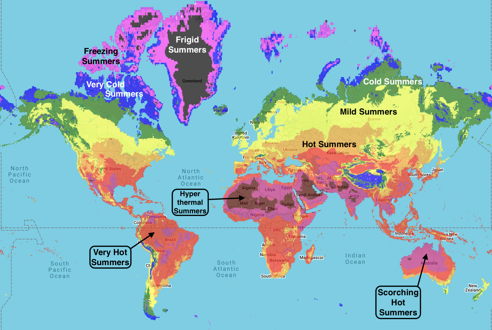

To request a map of any region, country, or state to be added to this webpage (or if you have any questions or comments), feel free to contact me at calebisaacdickinson@gmail.com
Because of significant discrepancies between datasets covering oceans and Antarctica, and the particular difficulties involved in accurately measuring these regions, we have limited our analysis to land-based (non-Antarctic) data. Current oceanic and Antarctic datasets lack the accuracy necessary for the standards of this website.
Winter Maps
Global distribution of winter categories - 1961-1990 normals

Global distribution of winter categories — 2025 High Emissions scenario (business as usual)

Global distribution of winter categories — 2100 High Emissions scenario (business as usual)

USA distribution of winter categories - 1961-1990 normals

USA distribution of winter categories — 2025 High Emissions scenario (business as usual)

USA distribution of winter categories — 2100 High Emissions scenario (business as usual)

Aridity Maps
Global distribution of aridity categories - 1961-1990 normals

Global distribution of aridity categories — 2025 High Emissions scenario (business as usual)

Global distribution of aridity categories — 2100 High Emissions scenario (business as usual)

USA distribution of aridity categories - 1961-1990 normals

USA distribution of aridity categories — 2025 High Emissions scenario (business as usual)

USA distribution of aridity categories — 2100 High Emissions scenario (business as usual)

Summer Maps
Global distribution of summer categories - 1961-1990 normals

Global distribution of summer categories — 2025 High Emissions scenario (business as usual)
Global distribution of summer categories — 2100 High Emissions scenario (business as usual)

USA distribution of summer categories - 1961-1990 normals

USA distribution of summer categories — 2025 High Emissions scenario (business as usual)

USA distribution of summer categories — 2100 High Emissions scenario (business as usual)